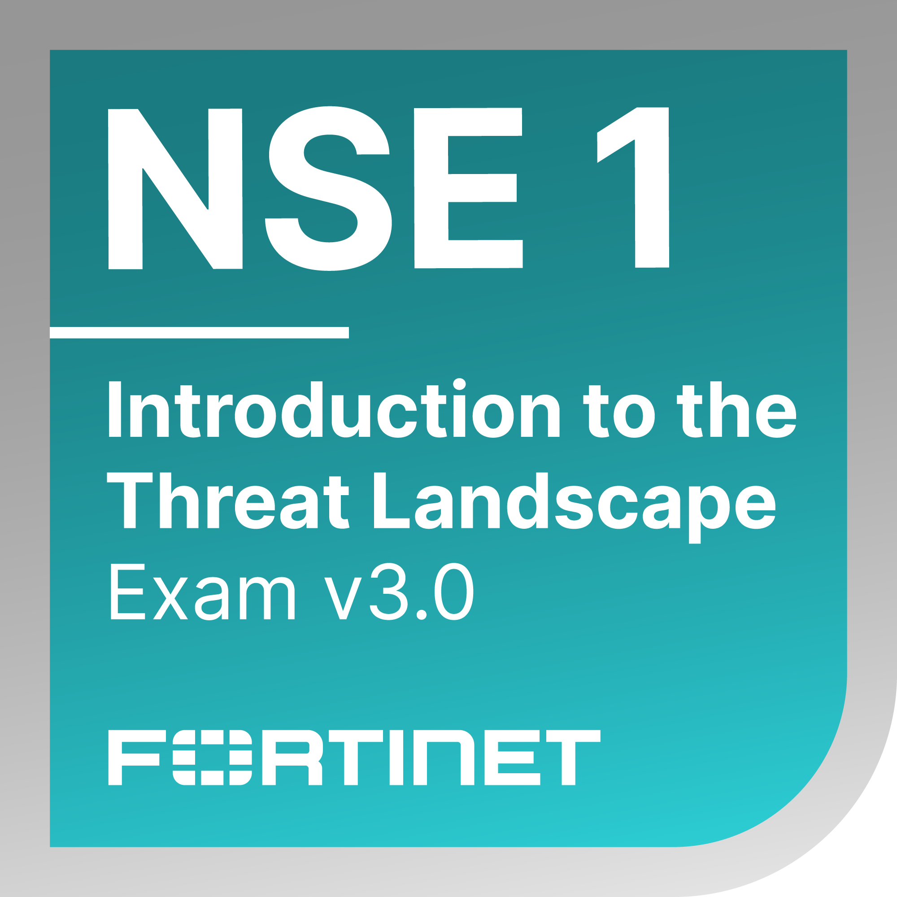
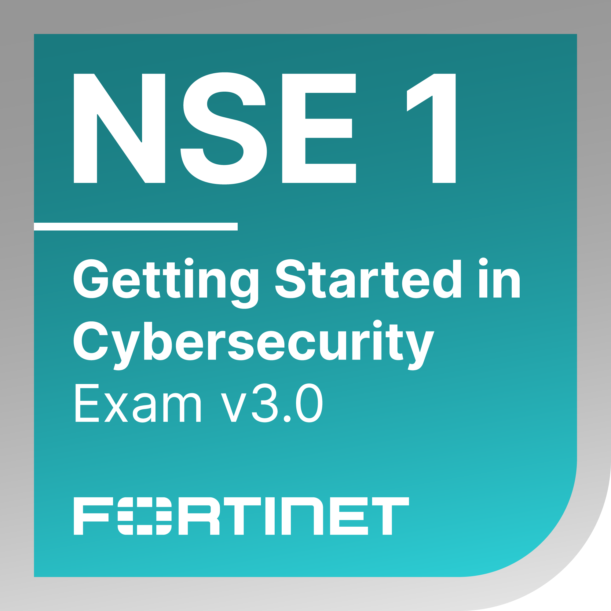
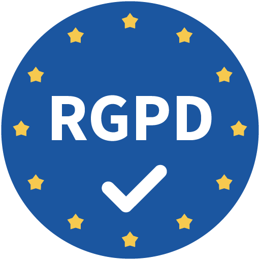
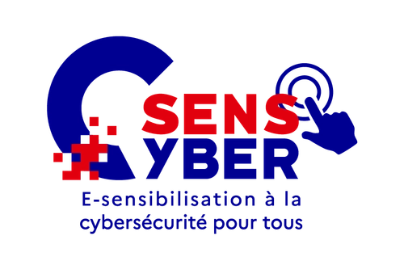
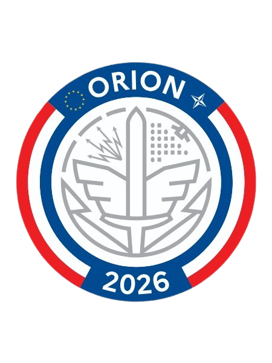
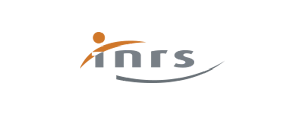
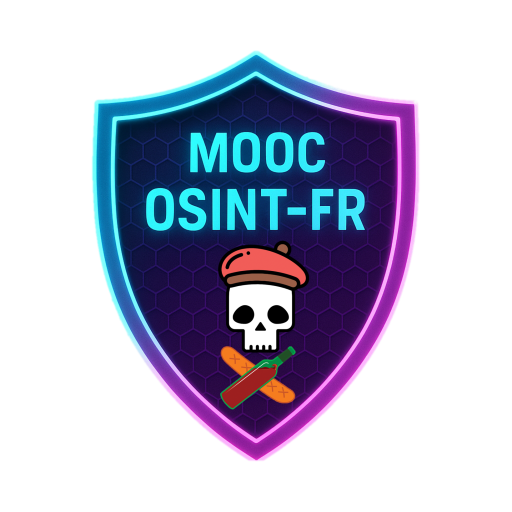

Certifications officiels
Microsoft
- AZ-900 : Azure Fundamentals
- MS-900 : Microsoft 365 Fundamentals
- SC-900 : Security, Compliance, and Identity Fundamentals
- Applied Skills : Microsoft Certified: Create, configure, and manage identities

Fortinet
- Certification Fortinet git(Introduction to the Threat Landscape 3.0) : Maîtrise des fondamentaux de la cybersécurité et de la gestion des menaces (Cyber Threat Intelligence).
- Certification Fortinet (Getting Started in Cybersecurity 3.0) : Maîtrise des fondamentaux de la cybersécurité, incluant l'architecture Zero Trust (ZTNA), le modèle SASE, les opérations de sécurité (SIEM/SOAR), la sécurité réseau (SD-WAN) et la gestion des menaces.


Autres Titres & Sensibilisations
- CNIL : MOOC Atelier RGPD (Maîtrise des principes fondamentaux du RGPD et sécurisation des données)
- Certification Journée d'Immersion Orion : Sensibilisation Défense Nationale
- SensCyber : Sensibilisation à la sécurité du numérique
- INRS : Attestation de réussite - Notions essentielles sur les troubles musculosquelettiques (TMS)
- MOOC OSINT-FR : Initiation à l'investigation en sources ouvertes
- Basel Institute On Governance : Open-Source Intelligence (OSINT) - ICAR




